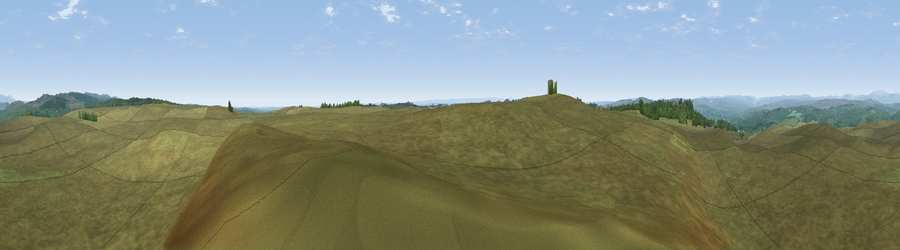

Viewpoint near Elsdon
#15237 in England · top 39% of its area beats it · near Elsdon · open accessWhere it is
The exact computed spot (NY 94925 90075). Click the marker for map links.
Public access: this spot lies on mapped open-access land (CRoW Act 2000) — you may roam here on foot. Computed from Natural England's CRoW access layer and OpenStreetMap rights of way — not the legal definitive map. Always verify locally.
The view, rendered

A 360° render of this exact spot computed from the terrain model, tree cover and land cover — summer colours, afternoon light, calibrated against photographs of famous viewpoints. Real trees, hedges and buildings will differ in detail.
The panorama
Grey silhouette: terrain skyline in each direction (720 bearings, Earth curvature and refraction included). Dashed green: skyline with trees (+15 m) and buildings (+8 m) as obstacles. Blue strip: how far the ground is visible on each bearing.
Where the view opens
Wedge length = distance to the farthest visible ground on that bearing (vegetation-aware). Rings at 10, 25 and 50 km.
What fills the view
98% grassland · 2% woodland
Angular shares of the visible panorama (visual magnitude), not map area. Landscape diversity 0.06 (0–1 Shannon).
Key numbers
More beautiful places nearby
The staircase of upgrades: each row has a higher view potential than everything closer. Driving times are estimates from straight-line distance, calibrated against real road routing — check an actual route before setting out.
| Place | Direction | Drive | Score |
|---|---|---|---|
| Viewpoint near Elsdon | SW · 1 km | ~2 min | 62.9 |
| Viewpoint near Elsdon | W · 3 km | ~7 min | 65.3 |
| Hart Side | SW · 3 km | ~8 min | 71.0 |
| Viewpoint near Elsdon | NNE · 6 km | ~12 min | 71.9 |
| Viewpoint near West Woodburn | SSW · 6 km | ~13 min | 73.4 |
| Darden Rigg | NNE · 8 km | ~15 min | 77.0 |
| Viewpoint near Hepple | NE · 11 km | ~21 min | 82.4 |
| Viewpoint c12273_7856 | N · 24 km | ~39 min | 83.7 |
55.20490, -2.08128 · source: screening · position refined by local search. Computed location — check access rights before visiting.